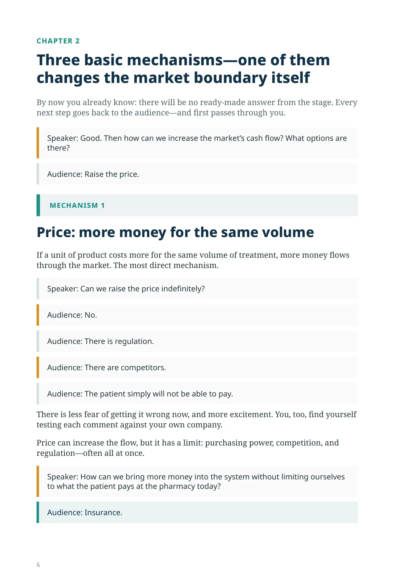
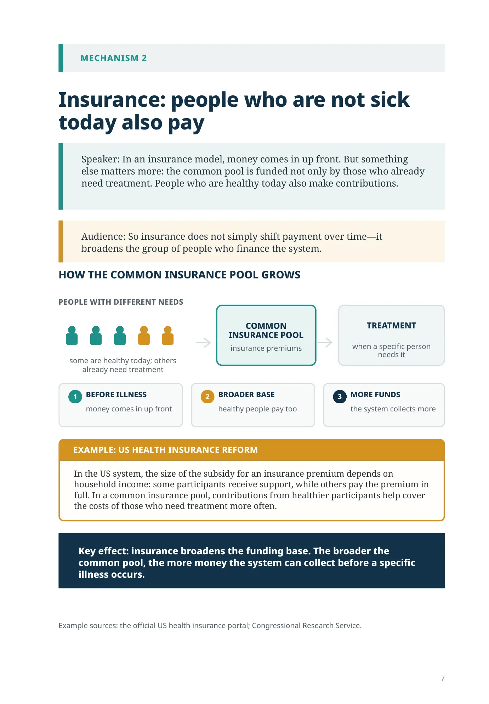
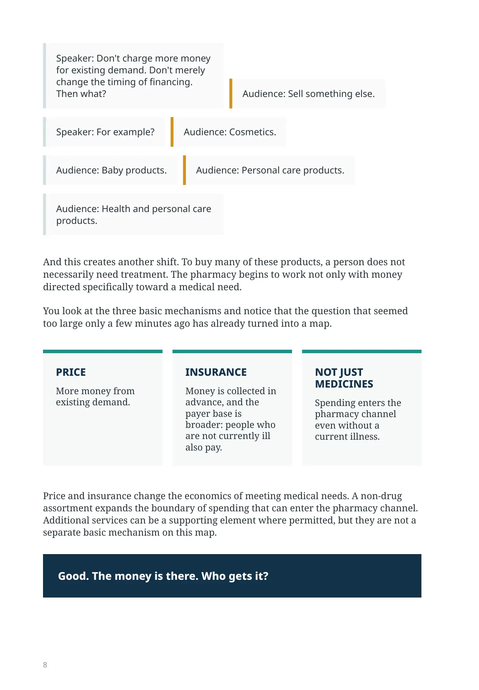

How Can We Increase Cash Flow?
CHAPTER 2
Three basic mechanisms—one of them changes the market boundary itself
By now you already know: there will be no ready-made answer from the stage. Every next step goes back to the audience—and first passes through you.
Speaker: Good. Then how can we increase the market’s cash flow? What options are there?
Audience: Raise the price.
Price: more money for the same volume
If a unit of product costs more for the same volume of treatment, more money flows through the market. The most direct mechanism.
Speaker: Can we raise the price indefinitely?
Audience: No.
Audience: There is regulation.
Audience: There are competitors.
Audience: The patient simply will not be able to pay.
There is less fear of getting it wrong now, and more excitement. You, too, find yourself testing each comment against your own company.
Price can increase the flow, but it has a limit: purchasing power, competition, and regulation—often all at once.
Speaker: How can we bring more money into the system without limiting ourselves to what the patient pays at the pharmacy today?
Audience: Insurance.
MECHANISM 2
Insurance: people who are not sick today also pay
Speaker: In an insurance model, money comes in up front. But something else matters more: the common pool is funded not only by those who already need treatment. People who are healthy today also make contributions.
Audience: So insurance does not simply shift payment over time—it broadens the group of people who finance the system.
HOW THE COMMON INSURANCE POOL GROWS
PEOPLE WITH DIFFERENT NEEDS
some are healthy today; others already need treatment
COMMON INSURANCE POOL
insurance premiums
TREATMENT
when a specific person needs it
BEFORE ILLNESS
money comes in up front
BROADER BASE
healthy people pay too
MORE FUNDS
the system collects more
EXAMPLE: US HEALTH INSURANCE REFORM
In the US system, the size of the subsidy for an insurance premium depends on household income: some participants receive support, while others pay the premium in full. In a common insurance pool, contributions from healthier participants help cover the costs of those who need treatment more often.
Key effect: insurance broadens the funding base. The broader the common pool, the more money the system can collect before a specific illness occurs.
Example sources: the official US health insurance portal; Congressional Research Service.
Speaker: Don't charge more money for existing demand. Don't merely change the timing of financing. Then what?
Audience: Sell something else.
Speaker: For example?
Audience: Cosmetics.
Audience: Baby products.
Audience: Personal care products.
Audience: Health and personal care products.
And this creates another shift. To buy many of these products, a person does not necessarily need treatment. The pharmacy begins to work not only with money directed specifically toward a medical need.
You look at the three basic mechanisms and notice that the question that seemed too large only a few minutes ago has already turned into a map.
- PRICE
More money from existing demand.
- INSURANCE
Money is collected in advance, and the payer base is broader: people who are not currently ill also pay.
- NOT JUST MEDICINES
Spending enters the pharmacy channel even without a current illness.
Price and insurance change the economics of meeting medical needs. A non-drug assortment expands the boundary of spending that can enter the pharmacy channel. Additional services can be a supporting element where permitted, but they are not a separate basic mechanism on this map.
Good. The money is there. Who gets it?